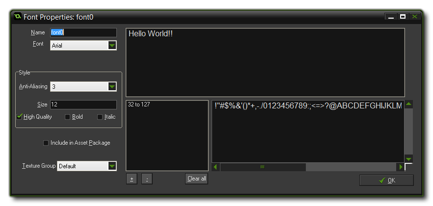

字体
这一节讲述了如何使用字体资源。
当你想要在游戏中绘制文字时，这些文字是使用标准的 Arial 12 号字体绘制的。但是为了让你的游戏看起来更独特更有趣，你可能想要使用不同的字体。为了使用不同的字体，你需要在电脑上使用 GameMaker: Studio 创建一个字体资源。每一个字体资源你需要指定你电脑里已有的一款字体，然后你就可以在你的游戏中通过 动作 或者 代码 来指定一个用来绘制的字体。
要在你的游戏中创建一个字体资源，你可以点击 Resources 菜单中的 Create Font ，或者点击工具栏对应的按钮，之后会弹出以下窗口： 就和其它资源一样，每个字体资源你都需要指定一个独一无二的名称，这样你（以及 GameMaker: Studio）才可以在编写游戏时区分不同的资源。下来你可以通过左侧的“Font”下拉框来选择并预览不同的字体。在下方你可以看到其它不同的功能，比如字号以及是否 加粗 或者显示为 斜体 ，以及是否启用抗锯齿（边缘平滑）。右边的预览窗口显示的是你选择的不同范围的文字在当前的字体设置中的显示效果，除了 抗锯齿，它不会显示在预览中，但是在游戏中是确实有效的。Please note that font scaling (especially from small to large) can give artifacts when drawn, so try to avoid this where possible.
一个字体通常包含了256个字符，编号从0到255，不过通常情况下你只会用到其中的一小部分。这就是为什么 GameMaker: Studio 默认只在字体资源中包含了从32到127号字符。不过你可以通过改变这个字符的范围来优化你的游戏，比如如果你某种字体只用来显示数字，那么你可以仅仅选择那些数字对应的范围。要这么做，你应该先点击 Clear按钮来清除当前设置的范围，然后点击“+”按钮来增加一个新的范围。这会弹出以下窗口： 这个窗口中有一些按钮来帮助你建立一个标准的字体范围
这个窗口中有一些按钮来帮助你建立一个标准的字体范围
- Normal 一般范围表示从 32 到 127
- All 全部范围表示从 0 到 255
- Digits 数字范围只包含了10个数字字符
- Letters 字母范围只包含了全部的大写和小写英文字母
要设置其它范围只需要在 Character Range 输入框中输入你要设置的范围的第一个和最后一个字符的编号即可（如果你使用了范围之外的字符，显示的时候会用空格代替）。除了这些按钮和输入框外，你还有两个特别有用的选项可供选择。
首先是标记为 From Code 的这个按钮。如果你点击这个按钮并确认，GameMaker: Studio 会自动解析你的游戏代码从中寻找字符串，然后创建相应的包含你游戏中全部文本的字符范围。注意，这会查找工程中的全部字符串（无论有没有双引号），因此也会包含文件名中的字符。当然你可以通过点你底部的“-”按钮来移除任何你不想要保留的字符范围。
其次是标记为 From File 的这个按钮。它的功能和上面这个很接近。如果你点击它，会要求你提供一个文件。 接下来 GameMaker: Studio 会解析这个文件然后根据在文件中找到的字符创建相应的字符范围。
最后，你可以给你的字体指定一个纹理分组。这对于你优化你的游戏的运行方式和游戏运行时的纹理交换量十分有帮助。更多关于纹理分组的信息参见 高级使用 - 纹理页面.
注意 : 由于授权问题， GameMaker: Studio 并不会在工程文件夹中储存你的字体文件（当你游戏最终完成时字体会被渲染为一个纹理分页，因此最终游戏是以图片形式绘制这些文字）。这意味着如果你想要分享你的 *.gmx 文件夹或者一个打包的 *.gmz 文件，你必须 手动的去打包你游戏会使用的字体，要知道不是所有人都和你一样拥有那些字体文件。
© Copyright YoYo Games Ltd. 2014 All Rights Reserved